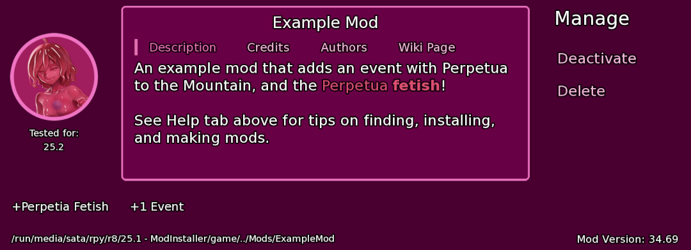

Meta Creation¶
Breaks down the keys and strings used by the Meta file, and gives extensive tips on what values to provide.

Go to Mods/_ExampleMod/, and then see the meta.json file for an example, or _BlankMeta.json for a template.
While your mod still works without a meta.json, it provides useful information in the in-game Mod screen for people installing your mod, including if their mod copy is out of date and needs updated.
File Location & Icon¶
In the base folder of your mod, create a file called meta.json. This is also the location of your mod icon to be displayed in-game.
Adding an icon is optional, as the game will use a placeholder if one is not included.
Your icon must be titled icon.png, and use the png image
format. The game will forcefully scale it to 150x150px and thus should
be designed squared. Targeting a higher resolution is recommended, as
you can use the icon elsewhere, such as on your mod page for the
wiki.
If you have a portrait of a character in your game, you can use an image editor that supports image layers to fit them within this character bubble template:
An example of what this looks like can be seen in the picture above of the Example Mod.
name¶
The name of the mod that is presented to the user on the Mod screen.
description¶
The description goes into a scrollable text box and is presented by default to the user. Can make use of text styling markup.
Given it is a single string, you can use `\n to give your description
line breaks when displayed.
The opening should be a single-sentence summary, ideally the same as the one on your mod wiki page.
The rest should focus on generally useful information about your mod, such as how the user can begin its content in-game.
testedFor¶
The last version of the game the mod has been tested against.
MGD internally uses semantic versioning to keep track of breaking game versions, following the Major.Minor.Patch model.
Unlike most keys for modding, this only takes an integer. This means you do not enclose it in "quotation marks", you only use numbers.
"testedFor": {"major": 25, "minor": 6, "patch": 1},
The above is equivalent to the game release Alpha-v25.6a:
"major"is the major game version (e.g. 25), signifying major game updates that can break older mods, or have features your mod depends on that older releases don't have."minor"is the minor game version (e.g. 6), signifying small game updates that can break older mods, or have features your mod depends on that older releases don't have."patch"is the patch game version (e.g. 1), where the numerical value starting from 1 is equivalent to the alphabetical patch version (3 is c, 0 is none, etc.). They don't break mods tested against older patches but may break newer mods depending on bug fixes from the newer version.
Tip
When updating your mod to newer game versions, use the changelog and check the Modding section of every update since your mod was last tested.
You can use your text editors project-wide search and replace
functionality (ctrl / ⌘ + shift + f) to find outdated keywords
listed as renamed or deprecated by breakingchange.
version¶
The version of your mod is meant to be increased between your mod updates.
Unlike most keys for modding, this only takes a float or integer. This means you do not enclose it in "quotation marks", and you only use numbers and optionally decimal values.
"version": 1.69,
How you decide to increase your version number is a personal choice, for as long as it only uses numerical values.
Tip
Will be overridden when using semVersion. While semVersion is recommended, which you use is up to personal preference.
semVersion¶
Like MGD, mods are to use semantic versioning. following the Major.Minor.Patch model.
Unlike most keys for modding, this only takes an integer. This means you do not enclose it in "quotation marks", you only use numbers.
"semVersion": {"major": 1, "minor": 3, "patch": 4},
- A Major (1 .6.9) value is for a significant milestone of progress worthy of a major version bump.
- A work in progress that isn't considered complete can use a value of 0.
- An update in a complete state that matches your initial vision, can give a value of 1.
- Further markers of significant milestones beyond your initial goal can be incremented.
- If an update revamps it so far that it makes no use of the original progress trackers, though it should come with a notice outside of your version number.
- A Minor (1. 6 .9) value is for notable milestones that alter or add to the mod's content.
- A Patch (1.6. 9) is for fixes relating to bugs and typos that neither add nor alter content to your mod.
- It is also good for marking updates solely done for compatibility with newer game versions.
tags¶
Few word descriptors that best describe the content of your mod, displayed in a horizontal row via an array of given values.
"tags" : [
"+Perpetia Fetish",
"+1 Location",
"+3 Events",
"+4 Characters",
"Steppy Kink"
],
You should keep each one under three words. Up to five tags would be a good amount, focusing on its most defining features.
A + symbol alongside a numerical can be used to denote how much of a
certain type of content it adds. The different types of JSONs you see in
this modding documentation are good examples, but can also be more loose
concepts. Such as:
"+2 Boss Fights","+4 Romance Arcs","+2 Endings"
Alternatively, you can also go for listing defining kinks of your mod. Specifying it as a kink is optional, especially if short on space.
"Hypnosis Kink","Large Breasts","BDSM Kink","Handholding"
If the mod focuses on being an expansion for base game content, an
"Expansion" tag is recommended.
credits¶
Provide credit to others who helped make your mod possible in a scrollable text box. Can make use of text styling markup.
"credits": [
"{b}Art{/b}",
"Perpetua portrait by {a=https://www.jfcsxf.com/comm_info.html}Jiffic{/a}",
"{b}Music{/b}",
"'Chilled - Desert Winds' by {a=https://www.purple-planet.com/}Purple Planet{/a}"
],
Listing credit to any online assets you used is recommended, you can
hyperlink your source using {a=https://link}Text here{/a}.
Especially should be used to promote any artists and musicians you commissioned.
It can optionally be a string instead
of an array, where you can use \n to provide linebreaks instead. This
will also give your text a left alignment rather than a center
alignment.
See the Example Mod for further reference on how you should format your credit.
authors¶
List your desired handle here. You can use text styling markup to hyperlink a location you can be reached at.
"authors": [
"{a=https://twitter.com/ThresholdMGD}Threshold{/b}",
"Noeru#0001"
],
Anyone who has directly worked on making your mod, such as direct involvement in the creative process or technical implementation, should be listed here.
Whether you also promote people you've commissioned here on top of your credit section is up to personal preference. They should at least be in the credit section.
urlLabel & url¶
"urlLabel": "Wiki Page",
Represents the title of the hyperlink presented to the user. It should only use up to three words under 10 characters.
Before opening the hyperlink, the user shall be asked to confirm the full URL of the link.
"url": "https://monstergirldreams.miraheze.org/wiki/Mod:Beach_Party"
The hyperlink to where you believe to be the central source of information on your mod. It is recommended that this page feature the link to the latest download of your mod, independent of the mod version, and your mod changelog.